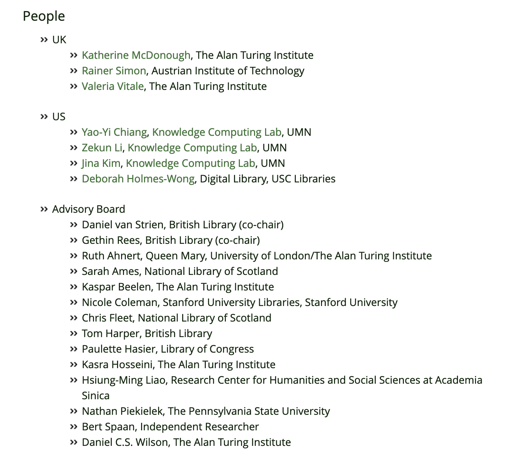
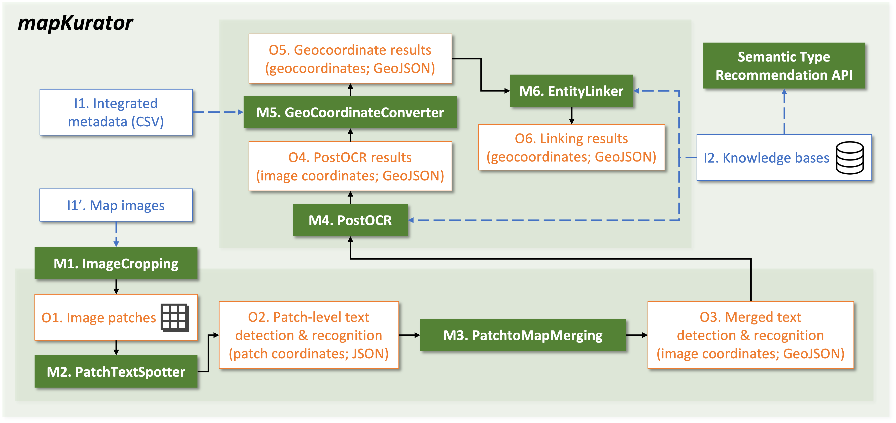
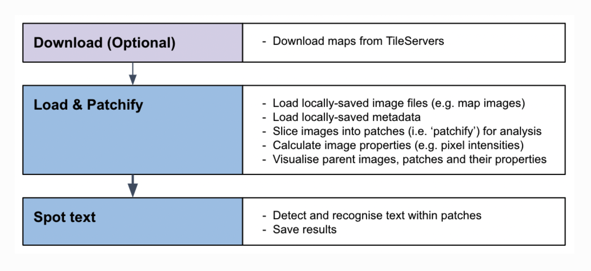

Looking ahead with legacy collections:
How computer vision and AI are helping unlock the hidden knowledge within Stanford’s map collections.
Evan Thornberry, David Rumsey Map Center
Stanford Libraries
+
David Rumsey
=
David Rumsey Map Center
historical maps as data
Machines Reading Maps

MRM's MapKurator System

https://knowledge-computing.github.io/mapkurator-doc
Living with Machines: MapReader
- The Alan Turing Institute
- Initially designed to work with large map sets
- Classification + text spotting pipelines
MapReader Classification
https://www.youtube.com/watch?v=iTKPsV_FQW0
MapReader Text Spotting

Visualizing Text Annotations
Unlocking Collections
davidrumsey.com
Machines Reading Maps - Stanford Digital Repository Data Collection
175,000,000 DRMC collection annotations
stanford.io/4fXX9Cf
Transformative Impact of AI on Historical Map Analysis
davidrumsey.com →→→ future
-
AI Chatbox
-
Image transcription
-
Enhanced metadata tools
Machines Reading Maps links
machines-reading-maps.github.io
knowledge-computing.github.io
MapReader links
mapreader.readthedocs.io
livingwithmachines.ac.uk